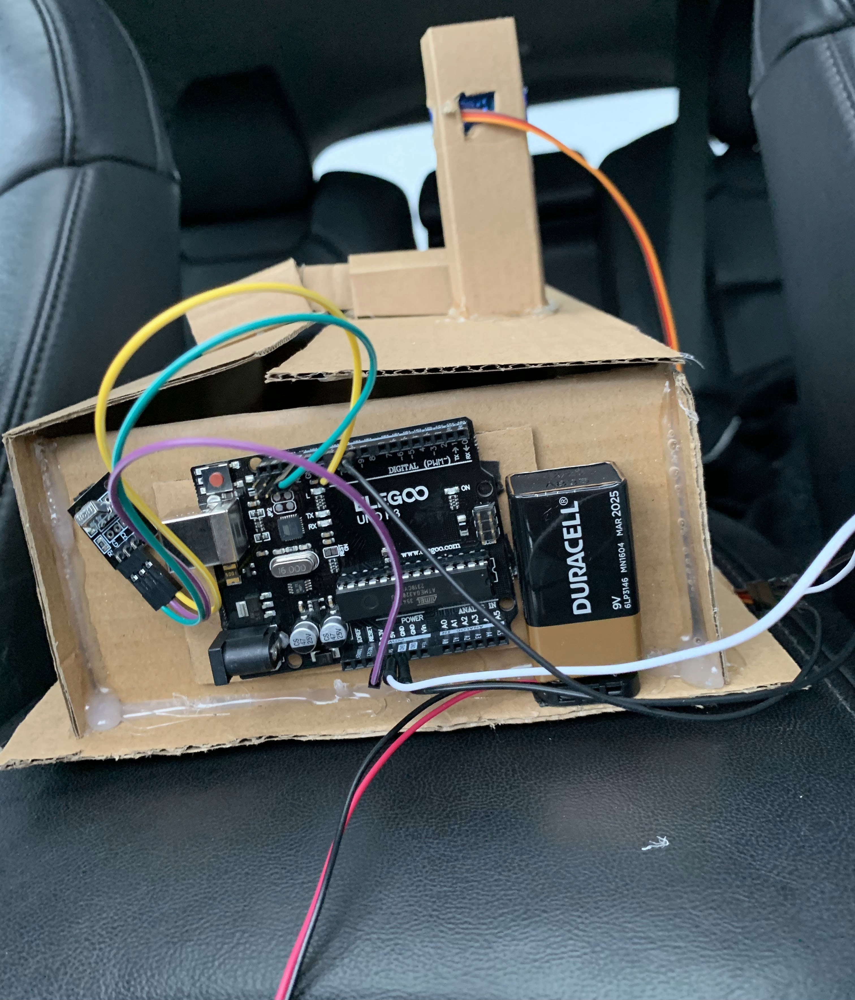

Drone Fertilizer Attachment Prototype
SkillsUSA • Arduino • Hardware Prototyping • Agricultural Innovation
For SkillsUSA, I designed and built a prototype drone attachment intended to help farmers spread fertilizer across rough or difficult terrain. The goal was to explore a low-cost engineering solution for an agricultural problem where traditional equipment may be less practical.
The prototype used Arduino circuitry, wiring, a battery-powered electronics setup, and a custom physical structure to demonstrate how a drone-based fertilizer distribution system could be controlled and mounted. This project helped me practice turning an idea into a physical proof of concept.
Arduino
Circuit Design
Prototyping
Engineering Design
Problem Solving
- Built a physical prototype using cardboard structure, wiring, Arduino hardware, and battery power
- Focused on a real-world agriculture use case involving fertilizer distribution
- Designed the attachment concept for terrain that may be hard to reach with standard equipment
- Presented the project through SkillsUSA competition work